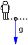
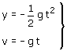
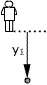
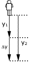
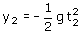
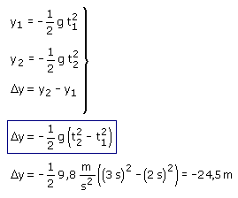

Este problema trata del recorrido parcial de un grave en el intervalo entre t = 2 y t = 3 s
Ecuaciones del movimiento:
|  |
 |
Parámetros: g = 9.8 m/s2 |
Aplicación: Comienza el recorrido parcial
Datos: t1 = 2 s, Incógnita: y1
|  |
|
Aplicación: Acaba el recorrido parcial
Datos: t2 = 3 s, Incógnita: y2
|  |
 |
El espacio parcial recorrido en el intervalo de tiempo dado será: Δy = y2 - y1
Combinando las expresiones anteriores se obtiene un sistema con tres incógnitas: y1, y2, Δy

La piedra cae 24.5 m durante el tercer segundo de caída